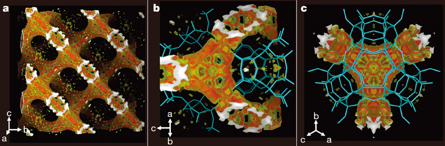

Report by Subjects
Report by Subjects
KAIST RESEARCH ACHIEVEMENTS
Lanthanum-catalysed synthesis of microporous 3D graphene-like carbons in a zeolite template
Department of Chemistry Ryong Ryoo
Summary
By 2050, oil resources will be nearly exhausted, and the world will be suffering from extreme environmental pollution. As a result, most countries will begin regulating the use of oil resources and call for all cars to be completely replaced by electric cars. In response to this, many automobile companies will seek out high-performance battery systems to pair with the electric motors in their vehicles. Amid this market trend, it is likely that three-dimensional microporous graphene synthesized using a zeolite template will attract significant attention for application as an anode material for batteries.
R&D Report
We demonstrated that lanthanum ions embedded in zeolite pores can lower the temperature for the carbonization of ethylene or acetylene. Based on this finding, we selectively created a graphene-like carbon structure inside a zeolite template without the formation of any undesirable carbon deposits on the external surface of the zeolite. After removing the zeolite, we were able to synthesize threedimensional, microporous, graphene-like carbon that exhibited significantly high electrical conductivity. Such a synthesis can be readily scaled up, which will give rise to various studies on the application of this fascinating carbon material. Three-dimensional graphene architectures with periodic nanopores, reminiscent of zeolite frameworks, are of topical interest because of the possibility of combining the characteristics of graphene with a three-dimensional porous structure. Scientists have sought to synthesize 3D graphenic carbon architectures with ordered structures using microporous crystalline zeolites as templates. This study, however, took up the considerable challenge of forming a carbon framework within a zeolite template through its narrow pore apertures.
 Figure 1. Electron density map of carbon in zeolite micropores derived from X-ray crystallographic data
Research Results
Based on the fact that lanthanum ions can bond with olefins and aromatic compounds through a d-π interaction, we expected that the use of a zeolite template, created by embedding La3+ in zeolite, would effectively promote the generation of carbon in the zeolite pores . The experimental results showed that La3+-containing zeolites converted ethylene molecules into a carbon framework at temperatures as low as 600°C (in general, ethylene can be transformed into hard carbons by thermal polymerization at temperatures above 750° C). The carbon framework was selectively formed inside the zeolite micropores without allowing carbon deposits to form on the external surface of the zeolite. Consequently, highly ordered, microporous, graphene-like carbon frameworks could be easily synthesized in this way. After the template was removed, the carbon product showed high electrical conductivity, which is enough to be reminiscent of a graphene-like carbon framework. Another noteworthy outcome of this study is the identification of the shape of the carbon framework formed within zeolite pores. Previous studies failed to present clear empirical proof showing whether the carbon structure was built systematically along the surface of the zeolite pores, as is the case with single-layer graphene, or that carbon atoms exist randomly in the zeolite template. Utilizing the fact that the characteristics of La3+-based catalysts allow carbon frameworks to form uniformly inside larger zeolites with sizes of several dozen microns, the researchers clarified the 3D periodic architecture of the carbon material using X-ray crystallography. Furthermore, this synthesis protocol can be readily scaled up with high reproducibility for highly ordered carbon structures with high electrical conductivity and specific surface area. The creation of graphene with 3D periodic nanoporous architectures holds great promise in the fields of batteries and catalysis, but has yet to see significant success owing to the lack of efficient synthetic strategies. Our protocol, with its pore-selective carbon filling at lower temperatures, will open up opportunities for new research in fields involving carbon materials, such as Li-ion batteries, supercapacitors, and catalyst support.
Research Funding
This research was supported by the Institute for Basic Science (IBS-R004-D1).
Research Outcomes
Lanthanum-catalysed synthesis of microporous 3D graphene-like carbons in a zeolite template, Nature, 535, 131-135 (2016).
- Expected to be used in drug development and new disease diagnosis